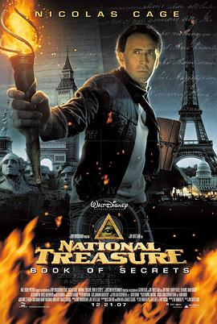

国家宝藏：夺宝秘笈 / National Treasure: Book of Secrets
又名：惊天夺宝：世纪秘册(港) / 国家宝藏：古籍秘辛(台) / 国家宝藏2：秘密之书 / 国家宝藏2
作品信息
| 导演 | 乔·德特杜巴 |
| 编剧 | 玛丽安·韦伯利 / 科马克·韦伯利 / 格雷戈里·波伊莱尔 / 泰德·艾略特 / 特里·鲁西奥 / 吉姆·科夫 / 奥伦·艾维夫 / 查尔斯·西格斯 |
| 主演 | 尼古拉斯·凯奇 / 贾斯汀·巴萨 / 黛安·克鲁格 / 乔恩·沃伊特 / 海伦·米伦 / 艾德·哈里斯 / 哈威·凯特尔 / 布鲁斯·格林伍德 / 泰·布利尔 / 麦可·麦兹 / 蒂莫西·V·墨菲 / 艾丽莎·科波拉 / 阿曼德·里斯科 / 阿尔伯特·海尔 / 乔·格拉什 / 克里斯蒂安·卡玛戈 / 布兰特·布里斯科 / 比利·安格 / 布莱德·罗 / 扎克瑞·戈登 / 皮特·伍德瓦德 / 奥利弗·缪尔海德 / 拉里·塞达尔 / Billy Devlin / 艾丽西娅·莉·威利斯 / 娜塔莉·德莱福斯 / Michael Stone Forrest / 格兰特·汤普森 / 兰迪·特拉维斯 / 斯蒂芬·希伯特 / 乔纳森·埃米特 / 格伦·贝克 / 迪米特里·格里特萨斯 / 戴维·尤里 / 彼得·迈尔斯 / 本·霍姆伍德 / Mike Altieri / 迈克·D·安德森 / Mark Barth / Nora Bauer / 塔季扬娜·布鲁切尔 / 埃莱娜·卡多纳 / Sharon Carpenter-Rose / Tim Colmus / Aaron Cornelison / 布鲁斯·艾伦·道森 / 斯卡利·德尔佩拉 / 凯莉·多森 / 利亚姆·费格森 |
| 类型 | 动作 / 悬疑 / 冒险 |
| 制片国家/地区 | 美国 |
| 语言 | 英语 / 法语 |
| 上映日期 | 2008-03-17(中国大陆) / 2007-12-21(美国) |
| 片长 | 124 分钟 |
| IMDb | tt0465234 |
最后一次看到是 2026-08-12T21:13:14+08:00 · 豆瓣原页